화약류관리기사 (2013-09-28 기출문제)
1과목: 일반화약학
1. 초안유제폭약(ANFO)의 특성을 옳게 설명한 것은?
- 유제를 주성분으로 하고 예감제로서 금속분을 가한 것이다.
- 유제는 보통 인화점이 50℃ 이상의 경유가 적합하다.
- NH4NO3와 유제의 배합비는 60 : 40 이 가장 좋다.
- 충격, 마찰 및 가열에 매우 예민하다.
(정답률: 86%)

2. 도폭선의 심약으로 사용되지 않는 것은?
- 헥소겐
- 펜트리트
- 트리니트로톨루엔
- 디니트로나프탈렌
(정답률: 89%)
3. 다이너마이트의 폭속을 도트리쉬법으로 시험한 결과 납판위 도폭선의 중심과 폭흔과의 거리가 50mm로 측정되었다. 이 다이너마이트의 폭속은 몇 m/s 인가? (단, 도폭선의 폭속은 7000m/s, 다이너마이트에 도폭선을 꽂은 간격은 100mm이었다.)
- 5000
- 6000
- 7000
- 8000
(정답률: 92%)
4. 다음 중 폭속이 가장 빠른 것은?
- 헥소겐(비중 1.7)
- TNT(비중 1.5)
- 뇌홍(비중 3.0)
- 아지화납(비중 4.0)
(정답률: 85%)
5. 한국산업규격에 의한 전기뇌관의 점화 전류 시험에서 발화전류와 불발화전류의 기준으로 옳은 것은?
- 발화 : 1A, 불발화 : 0.25A
- 발화 : 1A, 불발화 : 0.35A
- 발화 : 0.85A, 불발화 : 0.25A
- 발화 : 0.85A, 불발화 : 0.35A
(정답률: 100%)
6. 다음 중 질산에스테르류인 것은?
- 피크린산
- 테트릴
- 니트로셀룰로오스
- 헥소겐
(정답률: 84%)
7. 폭약의 배합에 있어서 산소과부족량을 부(-)로 하면 폭발 후 어떠한 유독 기체의 생성량이 증가하는가?
- 이산화탄소
- 일산화탄소
- 수소
- 산소
(정답률: 100%)
8. 아지화납 뇌관의 관체에 사용하는 금속은?
- 알루미늄
- 주석
- 구리
- 납
(정답률: 96%)
9. 폭약 중 폭발 반응에서 산소가 부족하지 않은 것은?
- TNT
- 테트릴
- 헥소겐
- 니트로글리세린
(정답률: 96%)
10. 다음 중 기폭제(약) 인 것은?
- DDNP
- RDX
- PETN
- DNN
(정답률: 88%)
11. 산소 공급제 역할을 하는 물질로만 이루어진 것은?
- 질산칼륨, 질산암모늄, 염소산칼륨
- 목분, 전분, 식염
- 질산칼륨, 식염, 염화칼륨
- 염화칼륨, 질산암모늄, 규소철
(정답률: 100%)
12. 공업뇌관의 성능을 츨정하려고 할 때 사용되는 시험법은?
- 가열시험
- 납판시험
- 맹도시험
- 구포시험
(정답률: 96%)
13. Nitroglycerine 의 성질로 옳지 않은 것은?
- 단맛이 나는 액체이다.
- C2H5OH, C6H6에 녹는다.
- 추운 겨울철에 동결할 우려가 있다.
- 기포를 함유한 액체는 연소·폭발하지 않는다.
(정답률: 80%)
14. 탄광용 폭약에서 주로 사용되는 감열소염제는?
- KNO3
- NaCl
- KClO3
- NH4ClO4
(정답률: 85%)
15. 난동 다이너마이트는 니트로글리세린에 약 몇 %의 니트로글리콜을 함유한 것인가?
- 1%
- 10%
- 25%
- 50%
(정답률: 79%)
16. 뇌관을 연결한 약포와 뇌관을 연결하지 않은 약포사이의 최대순폭거리를 s, 지름을 d 라고 할 때, 순폭도를 옳게 나타낸 것은?
- 1/sd
- s·d
- s/d
- d/s
(정답률: 96%)
17. 콤포지션-C 폭약에 대한 설명으로 옳은 것은?
- TNT, RDX, WAX 를 혼합한 폭약
- TNT, RDX 를 혼합한 폭약
- RDX에 가소제를 첨가한 폭약
- RDX 에 WAX 를 첨가한 폭약
(정답률: 78%)
18. 젤라틴 다이너마이트에 관한 설명으로 옳은 것은?
- 니트로글리세린에 규조토를 흡수시켜 만든다.
- 니트로글리세린에 질산암모늄을 흡수시켜 만든다.
- 니트로글리세린과 목탄을 흡수시켜 만든다.
- 니트로글리세린과 약면약을 콜로이드화한 것을 기제로 만든다.
(정답률: 92%)
19. 분상 다이너마이트는 교질 다이너마이트에 비하여 흡습성이 가장 크기 때문에 습기에 주의해야 한다. 다음 중 그 이유를 가장 옳게 설명한 것은?
- 흡습에 따라 니트로글리세린이 동시에 녹아 나오기 때문에
- 흡습한 것은 겨울에 얼기 쉽고 폭발감도도 예민해 지기 때문에
- 흡습한 것은 폭발감도가 저하하여 불발이나 잔유물이 생성되기 때문에
- 흡습한 것은 안정도가 저하되고 자연분해를 일으키기 쉽기 때문에
(정답률: 63%)
20. 폭약의 시험법에 대한 설명으로 옳은 것은?
- 가열시험은 안정도를 측정하는 시험이다.
- 내열시험은 맹도를 측정하는 시험이다.
- Hess 맹도시험은 폭속을 측정하는 시험이다.
- 유리산 시험은 정적효과를 측정하는 시험이다.
(정답률: 86%)
2과목: 발파공학
21. 시험발파결과 장약량이 2kg일 때 누두지수가 0.8로 약 장약 발파가 되었다. 최소저항선을 동일하게 하였을 때 표준발파가 되기 위한 장약량은 얼마인가? (단, 누두지수 함수는 Brallion 식 이용)
- 1.25kg
- 2.71kg
- 3.32kg
- 4.06kg
(정답률: 35%)
22. 암반사면을 조성하기 위하여 Trim Blasting을 적용하고자한다. 발파공의 직경이 76mm일 때 공간격과 저항선은 각각 얼마로 하여야 하는가?
- 공간격 = 1.22m, 저항선 = 1.59m
- 공간격 = 1.59m, 저항선 = 1.22m
- 공간격 = 1.32m, 저항선 = 1.69m
- 공간격 = 1.69m, 저항선 = 1.32m
(정답률: 53%)
23. 다음 중 발파계수가 관한 설명으로 옳은 것은?
- 암석계수 g는 폭약 1kg을 사용하여 발파할 때 얻을 수 있는 채석량을 의미한다.
- 폭약계수 e는 NG 60% 스트렝스 다이너마이트를 기준으로 다른 폭약과 발파위력을 비교하는 계수이다.
- 폭약의 성능이 좋을수록 폭약계수 e값은 커진다.
- 전색계수 d는 불안전 전색일 경우 1.0보다 작은 값을 가진다.
(정답률: 55%)
24. 다음과 같은 조건으로 전기뇌관을 직병렬 결선하여 발파를 실시하였다. 완폭이 될 수 있는 결선방법은? (단, 2직 6병은 총 12개의 뇌관을 2개씩 직렬로 결선하고, 다시 6개의 회로를 병렬로 연결한 직병렬회로
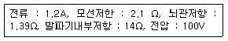
- 2직 6병
- 3직 5병
- 4직 4병
- 5직 7병
(정답률: 32%)
25. 발파비용의 계산에 있어서는 단순히 암석의 발파뿐만 아니라 그 외의 모든 작업에서 생기는 원인들을 고려해야 하는데 다음 설명 중 옳은 것은?
- 공경이 클수록 단위체적당 천공비용은 늘어난다.
- 단위체적당 장약에 드는 비용은 공경이 클수록 줄어든다.
- 적재운반비용은 사용기기와 적재용량에 좌우되며 적재용량이 작을수록 비용은 줄어든다.
- 소할발파 비용은 발파 전체 비용 중 간접비에 해당하므로 발파비용의 계산에는 일반적으로 고려하지 않는다.
(정답률: 22%)
26. 다음 발파해체 공법 중 해체대상 구조물의 주요 지지부를 발파하여 생기는 초기거동이 계속적인 붕괴를 유도하고 하부에 쌓인 파쇄물이 충격흡수제의 역할을 하도록 고안된 공법은?
- 내파공법(Implosion)
- 점진붕괴공법(Progressive collapse)
- 전도공법(Felling)
- 단축붕괴공법(Telescoping)
(정답률: 43%)
27. 다음 중 발파에 의해 발생하는 분진의 저감 대책 공법에 대한 설명으로 옳지 않은 것은?
- 커버설치법 : 발파공 주변에 젖은 진흙 등을 살포 한 상태에서 발파를 실시한다.
- 분무법 : 고압분무로 미세한 수적을 만들어 분진에 충동시켜 부유하고 있는 미세한 분진을 침강 시킨다.
- 살수법 : 분진발생을 억제하는 측면에서 직접 발생 부분에 수평 살수식으로 물을 뿌려준다.
- 간접대책 : 방진시트나 분진 차단막 등의 방진벽을 설치한다.
(정답률: 39%)
28. 다음 중 비산 방지대책으로 옳지 않은 것은?
- 발파 매트의 설치
- 방진구 설치
- 완전 전색으로 공발 방지
- 발파방법의 조절
(정답률: 48%)
29. 분산장약(deck charge)에 관한 설명으로 옳지 않은 것은?
- 발파공내 주상장약(column charge)의 기폭시간을 달리하여 진동을 감소시키는 방법이다.
- 분할된 폭약 사이의 전색장은 폭약의 직경에 비례하여 실시한다.
- 습윤된 발파공의 삽입 전색장은 건조한 발파공의 2배 정도로 실시한다.
- 기폭순서는 상부 자유면에서 가까운 폭약부터 기폭시킨다.
(정답률: 20%)
30. 터널 발파를 위하여 지름 102mm 무장약공 3개를 사용하여 대구경 심발발파를 시행하려고 한다. 이 때 첫 번째 사각형의 저항선(B)은 얼마인가? (단, B = 1.7D, D는 무장약공의 환산직경이다.)
- 17.3cm
- 30.0cm
- 34.6cm
- 52.0cm
(정답률: 44%)
31. 계단식 발파(bench blasting) 설계에서 가장 중요한 것은 최대저항선을 결정하는 일이다. 천공경 33mm, 장약밀도 1.25kg/ℓ, 폭약의 중량강도 1, 암석상대계수 0.4kg/m3 발파공의 구속 계수 1, 공간격/저항선의 비 1.25 일 때 최대저항선은 얼마인가?
- 1.0m
- 1.5m
- 2.0m
- 2.5m
(정답률: 34%)
32. 다단식 발파기를 사용하여 기폭을 실시하려고 한다. 다음 설명 중 옳지 않은 것은?
- 발파 장소 확인 후 파쇄암의 이동, 발파 공수에 의거하여 발파 패턴을 결정한 후 뇌관을 배열한다.
- 결선을 각 회로별 저항을 고려하여 직병렬 결선법을 시행하며, 결선 누락 확인 및 단선 여부를 확인한다.
- 단자판에 회로 연결시 순번대로 연결이 이루어져야 하며, 중간에 단자가 연결되어 있지 않을 경우 후열의 발파는 이루어지지 않는다.
- 다단식 발파의 회로 발파 초시 결정 요소로는 뇌관초시, 다단식 발파기내에 입력된 초시, 전기뇌관을 이용한 회로 구성 및 배열 등이다.
(정답률: 25%)
33. Pre-splitting 발파 시 장약량의 결정에 관한 설명으로 옳지 않은 것은?
- 천공경이 2배가 되면 장약량도 2배가 된다.
- 발파계수가 2배가 되면 장약량도 2배가 된다.
- 공간격이 2배가 되면 장약량도 2배가 된다.
- 천공길이가 2배가 되면 장약량도 2배가 된다.
(정답률: 38%)
34. 수중발파설계에 대한 설명으로 옳지 않은 것은?
- 수중 발파시 적용되는 비장약량은 일반 계단식 발파에 비해 2배 정도로 증가하여 시행한다.
- 수압을 보정하기 위해서 수심 m당 0.01kg/m3의 비장약량을 증가시킨다.
- 공간격과 저항선은 같고 초과천공장은 저항선의 1/2이하로 하며 최소한 0.8m는 되어야 한다.
- 천공깊이는 계단높이+초과천공장이고 무장약부분은 저항선의 1/3정도로 하며 최소한 0.5m이상으로 한다.
(정답률: 29%)
35. 진동을 분류함에 있어 발파진동과 지진등으로 분류 할 수 있다. 다음 중 설명이 옳지 않은 것은?
- 발파진동의 경우 지진동에 비해 지속시간이 짧다.
- 지진동의 경우 지하 수 km 이상 되는 지점에서 발상되며, 발파진동의 경우 지표 또는 지표 가까운 부분에서 발생된다.
- 진동의 주파수는 발파진동이 지진동에 비해 작게 발생되므로 건물에 미치는 영향이 크다.
- 지진에 의한 진동 피해의 경우 그 정도를 보통가 속도로 표시하고, 발파 진동에 의한 구조물의 피해는 진동 속도로 표시한다.
(정답률: 53%)
36. 다음 중 암석의 파쇄입도에 대한 설명으로 옳지 않은 것은?
- 암석의 파쇄는 목적에 따라 대괴생산, 소괴생산 및 규격석 생산을 위한 발파로 나눌 수 있다.
- 파쇄암석의 크기는 점화패턴, 천공경, 저항선과 공간격의 비, 장약장과 장약량에 따라 변한다.
- 암반의 전체를 순발발파할 경우보다 지발발파할 경우 파쇄암석의 크기는 작아진다.
- 파쇄암석의 크기는 공간격보다 저항선이 커짐에 따라, 장약장이 길고 장약량이 증가함에 따라 작아진다.
(정답률: 32%)
37. Decoupling 효과를 이용하여 발파를 실시할 경우 밀 장전을 실시하여 발파하였을 경우에 비해 공벽에 작용하는 폭굉압력은 감소하게 된다. 다음과 같은 조건으로 De coupling을 이용한 발파의 경우 폭약과 공기와의 경계면에서 발생하는 폭굉압력은 얼마인가?
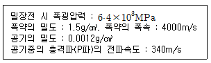
- 0.44MPa
- 0.62MPa
- 0.87MPa
- 1.49MPa
(정답률: 17%)
38. 발파현장에서 암반 천공작업에 의해 발생되는 음향 파워레벨이 130dB이다. 수음점이 천공작업을 실시하는 장소와 완전 노출되어 있으며 평지이다. 음원에서 50m 이격된 거리에 있는 수음점에서의 음압레벨은? (단, 음원은 점음원이며, 반구면파로 간주한다.)
- 54.94dB
- 63.94dB
- 73.94dB
- 88.02dB
(정답률: 35%)
39. 다음 중 응력파의 전파특성에 관한 설명으로 옳은 것은?
- 어떤 물체의 한 지점에 급격히 하중을 가할 경우 그 물체의 모든 부분에는 즉시 응력이나 변형이 동일하게 발생한다.
- 충격하중을 받은 물체 내에서는 통상 가로파, 세로파 및 전단파 등 3종류의 응력파가 발생된다.
- 전단파인 경우 그 전단파 내의 입자운동은 진행방향과 직각방향으로 전단변형이 일어난다.
- 세로파인 경우 그 세로파 내의 입장운동은 진행방향과 평행이 되는 방향으로 단순한 신축의 변형이 발생된다.
(정답률: 15%)
40. 다음에서 설명하는 것은?
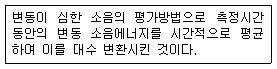
- 평균소음도(Average sound level)
- 소음 기준(Noise criteria)
- 교통소음지수(Traffic noise index)
- 등가 소음도(Energy equivalent sound level)
(정답률: 43%)
3과목: 암석역학
41. 직각 변형률 로젯(strain rosette)을 사용하여 측정한 변형률이 각각 ɛ0=8×10-3, ɛ45=5×10-3, ɛ90=-4×10-3 일 때 전단변형률(γxy)은?
- 2×10-3
- 4×10-3
- 6×10-3
- 8×10-3
(정답률: 5%)
42. 강도정수 m=20인 무결암(신선암)에 대해 Hoek-Brown 파괴 조건식을 적용하여 구한 취성도(일축압축강도/인장강도)로 알맞은 것은?
- 14
- 16
- 18
- 20
(정답률: 30%)
43. 암반내부에 축적되는 탄성변형률 에너지가 일시에 방출되면서 굴착된 갱도가 붕괴되는 현상과 관계가 없는 것은?
- 화성암이 퇴적암보다 발생빈도가 크다.
- 조립질 암석이 세립질 암석보다 발생빈도가 크다.
- 방출되는 에너지가 클수록 발생빈도가 증가한다.
- 암석의 강도가 크고 취성이 클수록 발생빈도가 증가한다.
(정답률: 48%)
44. 압열인장시험(Brazilian test)의 경우 원판형 시험편의 중심부에 발생하는 압축응력의 크기는 인장응력의 몇배가 되는가?
- 3배
- 6배
- 8배
- 10배
(정답률: 24%)
45. 영률 50GPa, 포아송비 0.2인 암석의 압축률은 얼마인가?
- 1.5×10-6MPa
- 3.6×10-5MPa
- 3.6×10-5/MPa
- 1.5×10-6/MPa
(정답률: 31%)
46. 다음 그림에서 원 ㉠(점선)은 건조한 시료의 응력 상 태를 나타낸다. 공극수압(pore water pressure)이 작용할 경우 Mohr 원을 나타내는 것은?
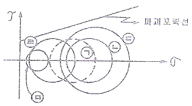
- ㉡
- ㉢
- ㉣
- ㉤
(정답률: 36%)
47. 다음의 Barton이 제시한 절리면 전단강도기준에 관한 설명으로 옳지 않은 것은?
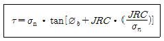
- ø는 기본마찰각으로서 톱으로 자르거나 연마된 전단면에서 얻을 수 있으나 잔류마찰각으로 대체하기도 한다.
- JRC는 절리면 거칠기를 나타내는 것으로서 Tilttest를 통해 구할 수 있다.
- JCS는 절리면 압축강도를 의미하는 것으로 JRC가 시험편의 크기효과를 가지는 것에 반해 JCS는 크기효과가 존재하지 않는다.
- σn은 수직응력을 나타내는 것으로서 이 값이 증가함에 따라 전단강도는 비선형적인 증가를 보인다.
(정답률: 35%)
48. 직경 d인 원주형 시험편에 대한 4점 횡강도(σb)를 구하는 식으로 옳은 것은?
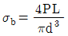
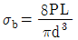
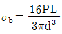
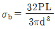
(정답률: 55%)
49. 암석 시험편의 일축압축강도에 영향을 미치는 요인에 대한 설명으로 옳은 것은?
- 시험편의 크기가 커지면 일축압축강도가 증가한다.
- 가압속도가 빠르면 일축압축강도는 감소한다.
- 포화된 암석은 건조된 암석보다 일축압축강도가 크다.
- 길이(h) 대 직경(d)의 비(h/d)가 작아지면 일축압축강도는 증가한다.
(정답률: 35%)
50. 암석의 탄성파 속도 시험은 비파괴 시험으로서 암질을 평가할 수 있다는 장점이 있따. 암석의 탄성파 속도에 영향을 미치는 요소에 대한 설명으로 옳지 않은 것은?
- 암석의 밀도가 클수록 탄성파 전파 속도는 커진다.
- 암석의 공극률이 클수록 탄성파 전파 속도는 작아진다.
- 층상을 나타내는 암석에서 층에 평행한 방향의 속도는 수직방향의 속도보다 작게 나타난다.
- 암석에 작용하는 구속압력이 증가할수록 탄성파전파속도는 커진다.
(정답률: 27%)
51. 아래 그림과 같이 임의의 입사 응력파 σI가 임피던스(pc)가 다른 두 매질을 통과할 때, 두 매질의 사이를 통과하는 전달 응력파 σT와 반사 응력파 σR이 발생한다. 만일 매질 1의 임피던스(ρ1c1)가 매질 2의 임피던스 (ρ2c2)보다 두 배 크다면, 전달 응력파 σT와 반사 응력파 σR을 올바르게 나타낸 것은? (단, ρ : 밀도, c : 탄성파속도) (문제 오류로 복원중입니다. 정확한 내용을 아시는 분께서는 오류신고를 통하여 내용 작성 부탁 드립니다. 정답은 1번입니다.)
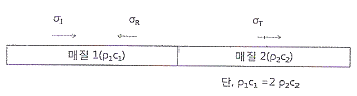
- 복원중(정확한 보기 내용을 아시는분께서는 오류 신고를 통하여 내용 작성부탁 드립니다.)
- 복원중(정확한 보기 내용을 아시는분께서는 오류 신고를 통하여 내용 작성부탁 드립니다.)
- 복원중(정확한 보기 내용을 아시는분께서는 오류 신고를 통하여 내용 작성부탁 드립니다.)
- 복원중(정확한 보기 내용을 아시는분께서는 오류 신고를 통하여 내용 작성부탁 드립니다.)
(정답률: 53%)
52. 정량적 암반분류법인 Q-System에 의하여 터널 지보설계를 수행하고자 한다. 다음 중 Q값 산정시 포함되지 않는 항목은 어떤 것인가?
- 절리면 변질도(Ja)
- 절리 방향성(Jd)
- 절리를 따라 흐르는 지하수 상태(Jw)
- 절리군 수(Jn)
(정답률: 46%)
53. 응력-변형률의 관계는 등방탄성체에서 평면응력의 경우 σ=[D]Є과 같은 행렬식으로 간단피 표현할 수 있다. 이 때의 행렬식이 다음 식과 같다면 (A)에 알맞은 것은? (단, E : 영률, v : 포아송비)
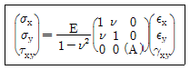
- v/1-v
- 1-v/1+v
- 1-v/2
- v/1+v
(정답률: 27%)
54. 다음 중 폐석 적치장이나 토질사면에서 주로 일어날 수 있는 사면의 파괴 형태는?
- 평면파괴
- 쐐기파괴
- 원호파괴
- 전도파괴
(정답률: 53%)
55. 한 개의 시추공으로 삼차원 응력장을 구할 수 있는 초기 응력 측정시험법은?
- 수압파쇄법
- 공벽변형법
- 공경변형법
- 공저변형법
(정답률: 26%)
56. 다음 중 일축압축시험에서 얻은 응력-변형률 곡선의 기울기 변화로부터 초기응력을 추정하는 방법은?
- Flat jack 법
- AE(Acoustic Emission)법
- DRA(Deformation Rate Analysis)법
- Doorstopper법
(정답률: 36%)
57. 지하 100m 지점에 반경 6m의 원형공동을 수평방향으로 굴착하였다. 터널의 단면적에 대한 수평터널의 길이는 충분히 긴 것으로 가정할 때 터널의 측벽부에 작용하는 응력 중 접선응력의 크기는 얼마인가? (단, 등방의 탄성암반이며, 연직응력은 1m 심도당 0.027M pa 증가하며, 포아송비는 0.25이다.)
- 6.2MPa
- 7.2Mpa
- 8.2MPa
- 9.2Mpa
(정답률: 38%)
58. 삼차원 응력상태를 응력텐서를 사용해 표시할 경우 독립항의 개수는?
- 3
- 6
- 9
- 12
(정답률: 27%)
59. 평면응력(plane stress)상태에서 σx=3000kg/cm2이고 σy=1000kg/cm2일 때, y방향의 변형률 Єy는? (단, 영률(Young's Modulus)은 2×105kg/cm2, 포아송비 0.25이다.)
- 1.25×10-4
- 1.77×10-4
- 2.43×10-4
- 2.85×10-4
(정답률: 32%)
60. 인장강도를 측정하기 위한 직접인장시험, 압열인장시험, 굴곡시험에서 구해진 인장강도의 일반적인 크기 순서로 옳은 것은? (단, 동일 암석 시료에 대해서 시험을 실시)
- 직접 > 압열 > 굴곡
- 압열 > 굴곡 > 직접
- 굴곡 > 압열 > 직접
- 압열 > 직접 > 굴곡
(정답률: 52%)
4과목: 화약류 안전관리 관계 법규
61. 화약류의 폐기에 관한 설명 중 옳은 것은? (단, 제조업자가 제조과정에서 생긴 화약류를 그 제조소안에서 폐끼하는 경우는 제외)
- 폐기하고자 하는 곳을 관할하는 경찰서장에게 허가를 받아야 한다.
- 폐기하고자 하는 곳을 관할하는 경찰서장에게 신고를 하여야 한다.
- 폐기하고자 하는 곳을 관할하는 지방경찰청장에게 허가를 받아야 한다.
- 폐기하고자 하는 곳을 관할하는 지방경찰청장에게 신고를 하여야 한다.
(정답률: 64%)
62. 운반표지를 하지 아니하고 운반할 수 있는 화약류의 수량으로 맞는 것은?
- 폭약 : 10kg 이하
- 미친동파쇄기 : 2000개 이하
- 실탄 · 공포탄 : 1000개 이하
- 도폭선 : 1000m 이하
(정답률: 67%)
63. 꽃불류의 사용허가신청의 경우 허가신청서에 첨부하여야하는 서류에 해당하지 않는 것은?(관련 규정 개정전 문제로 여기서는 기존 정답인 4번을 누르면 정답 처리됩니다. 자세한 내용은 해설을 참고하세요.)
- 사용순서대장
- 제조소명
- 사용장소 및 그 부근약도
- 화약류저장소의 설치허가증 사본
(정답률: 60%)
64. 다음 중 화약류의 안정도시험에 대한 설명으로 옳지 않은 것은?
- 화약류를 제조한 사람은 대통령령이 정하는 바에 의하여 안정도시험을 실시해야 한다.
- 화약류의 안정도를 시험한 사람은 시험결과를 관할 경찰서장에게 보고하여야 한다.
- 질산에스텔의 성분이 들어있지 아니한 폭약이라도 제조일로부터 3년이 지나면 반드시 안정도시험을 해야한다.
- 안정도 시험결과 대통령령이 정하는 기술상의 기준에 미달하는 화약류는 폐기하여야 한다.
(정답률: 60%)
65. 화약류저장소에 설치하는 피뢰도선은 직선으로 설치하되 부득이 곡선으로 할 경우 곡률반경의 기준으로 옳은 것은?
- 10cm 이상으로 한다.
- 20cm 이상으로 한다.
- 30cm 이상으로 한다.
- 40cm 이상으로 한다.
(정답률: 58%)
66. 화약류 사용자가 화약류취급소를 설치하지 않고 화약류를 사용하였을 때 행정처분 기준은? (단, 1회 위반의 경우에 한함)
- 경고
- 15일 효력정지
- 1월 효력정지
- 3월 효력정지
(정답률: 43%)
67. 1급저장소와 보안물건간의 보안거리의 기준으로 맞는 것은? (단, 저장된 폭약량은 20톤이며, 고압전선이 있음)
- 170m 이상
- 150m 이상
- 140m 이상
- 130m 이상
(정답률: 60%)
68. 꽃불류저장소 주위의 방폭벽의 위치 · 구조 등의 기준으로 옳지 않은 것은?
- 방폭벽은 두께 10cm이상의 철근콘크리트조 또는 두께 15cm 이상의 보강콘크리트블록조로 할 것
- 방폭벽은 꽃불류저장소의 바깥벽과의 거리가 2m 이상이 되도록 할 것
- 방폭벽은 꽃불류저장소의 처마높이 이상으로 할 것
- 방폭벽의 출입구에는 그 바깥쪽에 다시 방폭벽을 설치 할 것
(정답률: 55%)
69. 화약류와 관련된 허가권자로 옳지 않은 것은?
- 화약류 판매업 허가 - 경찰청장
- 폭약의 제조업 허가 - 경찰청장
- 1급 저장소 설치 허가 - 지방경찰청장
- 간이 저장소 설치 허가 - 경찰서장
(정답률: 35%)
70. 화약류의 포장기준에 대한 설명으로 옳지 않은 것은?
- 겉포장에는 손잡이를 하여 운반에 편리하도록 하고, 안전한 조치를 하여야 한다.
- 화약류는 그 화약류의 화학작용을 일으키지 아니하는 속포장에 넣은 다음 안전행정부령이 정하는 겉포장에 넣어야 한다. (예외사항 제외)
- 속포장에는 취급상의 필요한 주의사항을 명확히 기재하여야 한다.
- 속포장 및 겉포장에는 화약류의 종류, 수량, 성능, 제조소명, 제조년월일 등을 기재하여야 한다.(다만, 이를 기재할 수 없는 속포장은 그러지 아니한다.)
(정답률: 48%)
71. 화약류저장소에 흙둑을 쌓는 경우 설치 기준으로 옳지 않은 것은?
- 흙둑의 경사는 60° 이하로 하고, 정상의 폭이 1m 상으로 할 것
- 흙둑은 저장소의 바깥쪽 벽으로부터 흙둑의 안쪽 벽 및까지 1m 이상 2m 이내의 거리를 두고 쌓을 것
- 흙둑을 부득이 흙담으로 하는 경우 흙둑의 높이의 3분의 1 이하로 할 것
- 2개 이상의 저장소가 인접하여 중간의 흙둑을 갈아 사용하는 때에는 그 흙둑에 통로를 설치하지 아니 할 것
(정답률: 57%)
72. 폭약과 비슷한 파괴적 폭발에 사용될 수 있는 것으로서 대통령령이 정하는 것에 속하는 것은?
- 과염소산염을 주로 한 폭약
- 폭발의 용도에 사용되는 황산알루미늄 또는 이를 주성분으로 한 폭약
- 면약(질소함량이 11% 이상의 것에 한한다.)
- 무수규산 75% 이상을 함유한 폭약
(정답률: 42%)
73. 지하 1급저장소의 지반의 두께가 20m일 때 저장할 수 있는 폭약량의 기준으로 맞는 것은?
- 25톤 이하
- 20톤 이하
- 19톤 이하
- 17톤 이하
(정답률: 60%)
74. 화약류운반용 축전지차의 구조 기준 중 축전지의 사용 전압은 몇 볼트 이하로 하여야 하는가?
- 50V
- 60V
- 70V
- 80V
(정답률: 60%)
75. 사용허가를 받지 아니하고 신호 또는 관상용으로 1일 동일한 장소에서 사용할 수 있는 꽃불류의 수량의 기준으로 맞는 것은?
- 직경 6cm 미만의 둥근모양의 쏘아 올리는 꽃불류 30개 이하
- 직경 6cm 이상 10cm 미만의 둥근모양의 쏘아 올리는 꽃불류 15개 이하
- 300개 이하의 염관을 사용한 쏘아 올리는 꽃불류 1개
- 직경 10cm 이상 20cm 미만의 둥근모양의 쏘아 올리는 꽃불류 5개 이하
(정답률: 34%)
76. 다음 중 수분 또는 알코올분이 20퍼센트 정도 머금은 상태로 운반하여야 하는 것이 아닌 것은?
- 니트로셀룰로오스
- 테트라센
- 디아조디니트로페놀
- 트리니트로레졸신납
(정답률: 45%)
77. 화약류의 정체 및 저장에 있어서 폭약 1톤에 해당하는 화공품의 수량으로 맞는 것은?
- 총용뇌관 200만개
- 신관 또는 화관 50만개
- 실탄 또는 공포탄 250만개
- 미진통파쇄기 5만개
(정답률: 61%)
78. 화약류의 사용허가를 받은 사람이 허가없이 용도를 변경하여 화약류를 사용하였을 경우 벌칙은?
- 10년 이하의 징역 또는 2000만원 이하의 벌금형
- 5년 이하의 징역 또는 1000만원 이하의 벌금형
- 3년 이하의 징역 또는 700만원 이하의 벌금형
- 2년 이하의 징역 또는 500만원 이하의 벌금형
(정답률: 62%)
79. 다음 용어에 대한 정의로 옳지 않은 것은?
- 공식이라 함은 화약류의 제조작업을 하기 위하여 제조소안에서 설치된 건축물을 말한다.
- 화약류 일시저치장이라 함은 화약류의 제조과정에서 화약류를 일시적으로 저장하는 장소를 말한다.
- 정체량이라 함은 동일공실에 저장할 수 있는 화약류의 최소수량을 말한다.
- 보안물건이라 함은 화약류의 취급상의 위해로부터 보호가 요구되는 장비 · 시설 등을 말한다.
(정답률: 40%)
80. 위험공실의 시설기준에 관한 사항으로 옳지 않은 것은?
- 위험공실에는 규정에 의한 피뢰장치를 할 것
- 위험공실에는 규정에 의한 흙둑을 설치 할 것
- 위험공실의 부근에는 부근에는 저수지∙저수조∙비상전등 등 불을 끄는데 필요한 설비를 갖출 것
- 위험공실안에는 온도 및 습도의 조정장치를 설치할 것
(정답률: 42%)
5과목: 굴착공학
81. 터널에서 내공변위를 계측함으로ㅆ 확인할 수 있는 사항이 아닌 것은?
- 지보 부재 효과
- 복공 콘크리트 타설시기의 판정
- 록볼트 길이 타당성
- 주변 암반의 안정
(정답률: 48%)
82. 경사방향/경사로 표시된 135/60 불연속면의 방향성을 주향/경사로 표시할 때 옳은 것은?
- N45E/60SE
- N45E/60NW
- N45W/60NE
- N45W/60SW
(정답률: 59%)
83. 도시생활의 기반이 되는 통신 시설 및 전력 시설의 지중화는 지하의 어떤 특성을 이용한 것인가?
- 격리성
- 차음성
- 차광성
- 저장성
(정답률: 65%)
84. 터널 내에 용수가 있는 경우 적용할 수 있는 배수공법이 아닌 것은?
- 압기 공법
- 물빼기 시추
- 디프 웰(Deep well)공법
- 웰 포인트(well point)공법
(정답률: 52%)
85. 숏크리트의 건·습식 공법에 대한 설명으로 옳지 않은 것은?
- 습식은 청소, 보수가 쉽다.
- 리바운드율은 습식이 비교적 적다.
- 분진은 건식이 비교적 많다.
- 압송거리는 건식이 우수하다.
(정답률: 45%)
86. 경사가 60°인 사면 내에 존재하는 경사 30°의 절리면을 통해 평면파괴의 가능성이 있어 앵커를 타설하는 경우 안 전율이최대가 되는 앵커의 타설각도는 얼마인가? (단, 절리면의 마찰각은 45°이고, 타설각도는 수평면을 기준으로 한다.) (문제 오류로 복원중입니다. 정확한 내용을 아시는 분께서는 오류신고를 통하여 내용 작성 부탁 드립니다. 정답은 1번입니다.)
- 복원중(정확한 보기 내용을 아시는분께서는 오류 신고를 통하여 내용 작성부탁 드립니다.)
- 복원중(정확한 보기 내용을 아시는분께서는 오류 신고를 통하여 내용 작성부탁 드립니다.)
- 복원중(정확한 보기 내용을 아시는분께서는 오류 신고를 통하여 내용 작성부탁 드립니다.)
- 복원중(정확한 보기 내용을 아시는분께서는 오류 신고를 통하여 내용 작성부탁 드립니다.)
(정답률: 43%)
87. 다음 중, 정단층(normal faulting)지역에서의 암반응력관계를 올바르게 표시한 것은? (단, σv는 암반수직응력, σH는 암반 최대수평응력, σh는 암반 최소수평응력이다.)
- σv > σH > σh
- σH > σh > σv
- σH > σv > σh
- σH = σv > σh
(정답률: 44%)
88. 평사투영해석에서 구면상의 점을 구의 중심을 통과하는 수평면상에 투영하기 위한 투영법은?
- 등면적 투영법
- 등각 투영법
- Lambert 투영법
- Schmidt 투영법
(정답률: 43%)
89. 흙막이 개착공법 중 그라운드 앵커공법에 대한 설명으로 옳지 않은 것은?
- 굴착규모가 중규모 이하로써 평면 형상이 사각형일 때 적용되는 공법이다.
- 작업공간이 충분히 확보되며, 굴착장비의 반입이 자유로워 기계굴착이 가능하다.
- 앵커에 프리스트레스를 주기 때문에 흙막이벽의 변형을 억제하고 주변지반의 침하를 최소한으로 줄일 수 있다.
- 지하수위가 높을 경우 앵커천공으로 인한 지하수위 저하로 배면지반의 침하를 유발할 수 있다.
(정답률: 23%)
90. Q값이 10.0인 암반에 시공할 구조물의 굴착지보계수 (ESR)가 1.0일 때, 최대 무지보 폭은 얼마인가?
- 2.0m
- 3.0m
- 4.0m
- 5.0m
(정답률: 32%)
91. 다음 중 토압식(EPB, Earth Pressure Balance) 쉴드 TBM의 특징으로 옳지 않은 것은?
- 굴착토의 배토상태에 따라 지반의 상황을 판단하기 쉽다.
- 고결 점토 및 고결 실트층에서 N치가 높을수록 굴착효과가 높다.
- 지반침하 및 융기에 대하여 주의가 필요하다.
- 소성유동성이 적은 토질에서는 소성유동화 개량재의 첨가가 필요하다.
(정답률: 35%)
92. Rankine의 토압계수에 대한 설명으로 옳지 않은 것은?
- 수동토압계수는 주동토압계수보다 크다.
- 주동토압계수와 수동토압계수는 반비례의 관계가 있다.
- 지반의 내부마찰각만 있으면 토압계수를 계산할 수 있다.
- 주동토압계수와 수동토압계수의 곱은 1보다 크다.
(정답률: 30%)
93. 타원형의 단면을 갖는 암반 터널에서 타원의 장축방향으로 작용하는 초기수직응력과 단축방향으로 작용하는 초기수평응력의 크기가 10MPa로 동일한 경우 터널의 바닥면에 발생하는 접선응력의 크기는 얼마인가? (단, 타원의 장축방향의 반경은 단축방향 반경의 2배이다.)
- 10MPa
- 20MPa
- 30MPa
- 40MPa
(정답률: 32%)
94. 터널의 특수굴착공법 중 침매공법에 대한 설명으로 옳지 않은 것은?
- 하천, 해역 등 수저에 터널을 설치하는 경우 이용하는 공법이다.
- 지반중을 굴진하는 터널에 비하여 터널 전체 길이를 단축할 수 있다.
- 단면 형상은 유속, 수심 등의 영향으로 선택의 폽이 좁은 단점이 있다.
- 침매공법의 적용시 다량 발생되는 준설토사의 처분문제등을 고려하여야 한다.
(정답률: 34%)
95. 다음 중 터널의 용수와 관련된 문제점으로 옳지 않은 것은?
- 막장의 자립성 저하
- 토압감소
- 낙반
- 지층의 유출
(정답률: 32%)
96. 암반분류법인 RMR 분류 결과로부터 얻을 수 있는 자료와 가장 거리가 먼 것은?
- 공동의 평균 자립시간
- 공동의 평균 굴착심도
- 암반의 점착력
- 암반의 마찰각
(정답률: 32%)
97. 터널의 안전성을 확보하기 위하여 설치하는 콘크리트라이닝의 미세균열의 발생을 저하시키는 방법으로 옳지 않은 것은?
- 1차, 2차 콘크리트 라이닝을 절연한다.
- 콘크리트의 품질을 개량한다.
- 미세균열을 집중 또는 분산시킨다.
- 2차 콘크리트 라이닝의 두께를 얇게 한다.
(정답률: 43%)
98. 토질사면의 전단강도를 감소시키는 요인으로 옳지 않은 것은?
- 공극수압의 증가
- 흡수에 의한 점토지반의 팽창
- 느슨한 사질토의 진동
- 지진, 발파 등에 의한 진동
(정답률: 22%)
99. 다음 중 NATM 공법의 원리에 대한 설명으로 옳지 않은 것은?
- 터널을 근본적으로 지지하는 요소는 암반자체가 갖고 있는 지지력이다.
- 암반의 이완 또는 그로 인한 광범위한 변형은 최대한 방지하지 않으면 안된다.
- 암반은 1축 또는 2축 응력상태가 될 수 있게 설계하여야 한다.
- 시기적절하게 복공을 실시함으로서 지본의 효과를 보다 높이는 일이 필요하다.
(정답률: 39%)
100. 다음 중 강아치 지보공에 대한 설명으로 옳지 않은 것은?
- 조립과 동시에 암반을 지지하는 능력을 발휘할 수 있다.
- 균열이 많고 굴착으로 인하여 붕괴 위험성이 있는 암반의 지지에 유효하게 사용된다.
- 강아치 지보공은 단독으로 암반이 갖는 강도를 적극적으로 이용할 수 있다.
- 강아치 지보공은 H 형강 등의 강재를 터널의 형태에 맞추어 가공하여 일정간격으로 설치한다.
(정답률: 34%)